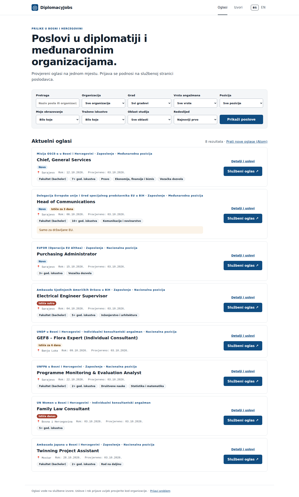
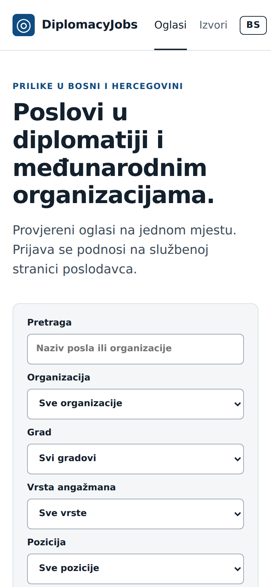
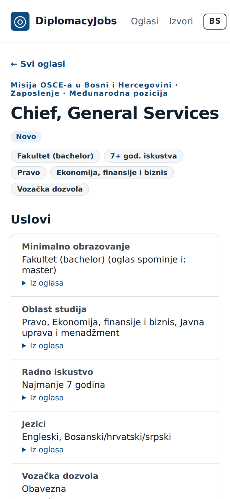

UNFPA u Bosni i Hercegovini Novo
Programme Monitoring & Evaluation Analyst
Rok prijaveJoš 19 dana
Službeni oglas
Design proposal · MVP · 3 Oct 2026
An audit of the public site as it stands on claude/great-cerf-a494ae, a token-based design system that keeps today's institutional look, and redesigned job list, job page and sources screens. The aim is to make the site calmer on phones and put the deadline first. Every claim it makes should stay visibly backed by evidence.
The foundation is strong. The site has honest coverage states, quoted evidence for every extracted requirement, accessible labels, a bilingual interface and no JavaScript dependency. The issues below are mostly about hierarchy and density, plus three real bugs. Screens were captured from a local run with 8 sample jobs and the real 87-organization registry.



| Sev. | Finding and fix | Heuristic |
|---|---|---|
| 4 | The whole site scrolls sideways on phones.At 390px, .site-nav plus the language switch are 425px wide, so every page overflows by 35px. Fix (done): under 760px the header has two rows, with the brand and BS/EN on the first and the Oglasi/Izvori tabs on the second. BS/EN is a 2×40px segmented control outside the <nav>. The English job cards also overflowed at 320px; their actions now wrap. | Consistency, platform conventions |
| 3 | On mobile the first screen has no jobs.The hero plus nine stacked selects take ~1,250px before the first result. Fix: show the search field, City, Type and a Filters (n) disclosure. The six requirement filters move into the disclosure (<details>, no JS), and the hero shrinks to one line. | Aesthetic & minimalist; Hick's law |
| 3 | Deadline, the deciding fact, is the quietest text on the card.It is 13px grey monospace, and urgency appears as a separate badge above it. Fix: a Deadline component in the card's right column shows the date in bold with a countdown pill coloured by urgency. | Visibility of status; content priority |
| 3 | The job page's Apply button and deadline are at the bottom on mobile.The aside follows the requirements. Fix: a two-up summary grid under the title, plus a sticky bottom bar with the deadline and Službeni oglas ↗. | Recognition over recall; Fitts's law |
| 3 | Applied filters are invisible once the panel scrolls away."Poništi filtere" is the only way back, and it clears everything. Fix: removable chips for each active filter (plain links that drop one parameter), with "Clear all" next to them. | User control & freedom |
| 3 | Two status colours collide on /sources/..status-pill.review and .unavailable share the amber background, and pending and not found share grey, so colour carries no meaning there. Fix: one hue per state (review becomes violet), and each pill keeps its text label. | Consistency; don't rely on colour |
| 2 | Each card has two calls to action, both strong.A filled navy button on every card repeats eight times, which flattens the page and diverts people from the evidence page. Fix: the whole card links to the job page (stretched link). The external link becomes a secondary button. | Aesthetic & minimalist; Von Restorff |
| 2 | Kicker line overload.Employer · type · scope run together in 12px bold blue and wrap to three lines on mobile. Fix: the employer gets its own line in regular weight with a monogram, and type and scope move into the meta row with icons. | Visual hierarchy |
| 2 | Input borders fail non-text contrast.#9aa5b1 on white is 2.5:1, below the WCAG 1.4.11 minimum of 3:1. Fix: --color-border-control #7b8794 (3.66:1). | Accessibility |
| 2 | No designed focus state.site.css has no :focus rule, and the language switch targets are about 28px high. Fix: a global :focus-visible ring token, and controls at least 40×32px (44px for primary). | Accessibility; Fitts's law |
| 2 | The /sources/ table is 9,500px long.It lists 88 rows ungrouped, and 30 of them are "no list found". Nine filter pills duplicate the four stat cards. Fix: the stat cards become the filters, rows are grouped by state with covered sources first, and a stacked bar summarises coverage. | Information density |
| 2 | Trust signals live only on /sources/.The job list doesn't say how many sources are watched or when they were last checked. Fix: a trust strip under the hero, e.g. "50 sources tracked · checked today 06:00 · How we collect →". | Visibility of status; match real world |
| 1 | Emoji and glyph icons.📍 and ◎ render differently on each OS (colour emoji on iOS, missing on some Linux). Fix: a 12-icon inline SVG set in currentColor. | Consistency |
| 1 | Monospace for dates and meta.IBM Plex Mono for Bosnian prose ("Provjereno: …") reads as code. Fix: Public Sans with tabular-nums. Keep the mono font for source domains only. | Typography |
| 1 | "Novo" on almost every card.With a three-day window and daily scraping, the badge loses its signal. Fix: keep it, but as a quiet brand-tinted pill next to the employer rather than a row of its own. | Von Restorff |
Severity: 4 must fix before launch · 3 major · 2 minor · 1 cosmetic (Nielsen scale).
Four rules to settle future design arguments. They come from what the product already promises in PLAN.md: official sources, honest coverage and Bosnian first.
Every extracted fact can show the sentence it came from, and every count shows when it was checked. Unknown stays unknown: "—", never 0. The design gives evidence a consistent, quiet form (a quote block with a brand rule) so it's always one tap away and never clutter.
A job seeker's first question is "can I still apply?" The deadline is the second-strongest element on a card, after the title, and the only one with urgency colour. Nothing else on the card uses red or amber.
Most visitors in BiH will arrive on mobile from a shared link. The first screen shows results. Secondary controls go behind one disclosure, and the apply action stays within thumb reach.
Blue means the brand and links. Green means a source is covered, red means it ends today, amber means it ends soon or there is a warning, violet means in review, and grey means not tracked. Colour always comes with a text label.
The tokens come in three tiers (global → alias → component), defined in tokens.css. The brand blue #0f4c81 and the slate text colours stay as they are, so adopting them is mostly replacing hex values with var(). Dark mode only remaps alias tokens. Switch your OS to dark mode to preview it on this page.
--color-text on surface16.5:1 · titles, values--color-text-muted6.46:1 · meta, captions--color-brand / inverse8.86:1 · primary button--color-border-control3.66:1 · inputs (was 2.5:1)--color-deadline-today6.57:1 · ends today/tomorrow--color-deadline-soon8.56:1 · ends within 7 days--color-status-covered5.65:1--color-status-partial7.75:1--color-status-review6.89:1 · new hue--color-status-unavailable8.56:1--color-status-untracked7.77:1All ratios are WCAG 2.2 values computed for the light theme. The dark theme pairs (e.g. #7cb8f0 on #15232f, 7.6:1) are listed in tokens.css.
The scale is Public Sans throughout on a 1.25 major-third scale from 16px, so 7 sizes replace 16. Dates and counts use font-variant-numeric: tabular-nums instead of a monospace font. Self-host the two font files through WhiteNoise so the board renders the same when Google Fonts is blocked.
--space-14 · icon gaps--space-28 · pill groups, tight stacks--space-312 · card-to-card--space-416 · mobile gutter, inner gaps--space-624 · card padding--space-832 · desktop gutter, section gap--space-1248 · between page sections--space-1664 · hero paddingbuttons, inputs
cards, panels
tags, status
search bar
card hover
mobile apply bar
Motion: 120ms for hover and colour, 200ms for disclosure, both --ease-out, and zeroed under prefers-reduced-motion. Radius 7px is removed. Breakpoints go from four (640/760/900/1050) to two: 640 and 960.
Each component maps to an existing template partial so it can land without restructuring views. Class names in the mockups use a ui- prefix only to keep them apart from this page's styles. In site.css they would replace the current names one-to-one (.job-card, .status-pill, …).
sm). The focus ring comes from a token..apply, .filters button and .report-form button.<time datetime>, bold, tabular), and a countdown pill.job.days_left as it is today, and replaces .badge.urgent/.soon and the "Rok:" meta span.{% deadline job %}, is reused by the card, the summary and the sticky bar.UNFPA u Bosni i Hercegovini Novo
Delegacija EU i Ured specijalnog predstavnika EU u BiH
Samo za državljane EU.
--long size. Hidden on mobile.z-index:1) and keeps its own target.--color-border-strong and adds --shadow-2, with no movement.Obrazovanje, iskustvo i oblast prikazuju samo oglase u kojima je uslov jasno naveden.
<details> that holds organization, scope, education, experience and field. It opens by default when any of them is set. Sort moves to the results header.<a> elements built from page_query minus one key, so they need no JavaScript.University degree in public administration, law or economics.Službeni oglas · OSCE · provjereno 03.10.2026.Minimum 7 years of relevant experience.Ovaj oglas više nije među aktuelnim oglasima. Provjerite stanje na službenoj stranici.
Automatski prijevod sa engleskog jezika. Mjerodavan je službeni oglas.
lang.cite line names the source and check date..notice, .eligibility and .translation-note..site-nav{gap:var(--space-1)} with links padded at 0 12px, and .header-inner{flex-wrap:wrap} as a safety net.These are built entirely from the components above with realistic content. Red numbers point to changes from the audit.
Prilike u Bosni i Hercegovini
Provjereni oglasi ambasada i međunarodnih organizacija na jednom mjestu. Prijava ide na službenu stranicu poslodavca.
UN Women u Bosni i Hercegovini
Delegacija EU i Ured specijalnog predstavnika EU u BiH Novo
Samo za državljane EU.
3
1A trust strip carries the coverage numbers onto the home page. The figures come from the same query that /sources/ uses.
2Each applied filter is a removable chip, and requirement filters wait behind Filteri.
3Cards lead with the title and the deadline. The single secondary button replaces two strong ones, and the eligibility note is one line.
UN Women u BiH
Delegacija EU u BiH Novo
The first job appears at about 470px, down from about 1,250px today. The nav moves to a second row, so the header fits at 320px.
Misija OSCE-a u BiH Novo
University degree in public administration, law or economics.Minimum 7 years of relevant experience.Provjereno 03.10.2026. · Prijavi problem
A summary grid under the title shows the deadline straight away, and a sticky bar keeps Apply within thumb reach. The desktop layout keeps today's sticky aside.
Transparentnost izvora
Oglase preuzimamo sa službenih stranica poslodavaca. Prazno polje ne znači nula oglasa.
| Izvor | Vrsta | Status | Oglasi | Provjereno |
|---|---|---|---|---|
| S otvorenim oglasima · 10 | ||||
| UNDP u Bosni i Hercegoviniprocurement-notices.undp.org ↗ | Međunarodna org. | Dostupan | 8 | danas 06:02 |
| EUFOR (Operacija EU Althea)euforbih.org ↗ | Međunarodna org. | Dostupan | 2 | danas 06:01 |
| Bez otvorenih oglasa · 40 | ||||
| Ambasada Japana u BiHbosnia.emb-japan.go.jp ↗ | Ambasada | Dostupan | 0 | danas 06:03 |
| Prikaži još 39 | ||||
1The stacked bar answers "how complete is this?" before anyone reads a number.
2The four stat cards are now the filters, replacing nine pills. Sub-states such as "awaiting integration" stay inside each group.
3Rows are grouped, sources with jobs come first, long groups are trimmed with a "show more" link and there is a name search. The page goes from about 9,500px to about 2,000px.
The work is ordered so the launch blockers come first and each step can be shipped and reviewed on its own. Django view logic doesn't change. The work is in CSS and templates, plus one small template tag.
Done 3 Oct 2026
board/static/board/tokens.css is linked before site.css, and site.css has no raw hex values left. Dark mode is defined but opt-in (<html data-theme="auto">), so it stays off until QA.:focus-visible ring, set --color-border-control on inputs and enlarge the language switch targets.templates/board/_icons.html).Launch week · 2–3 days
<details> for requirement filters, and applied chips built from page_query (jobs.html, a small helper in views.py).{% deadline job %} inclusion tag (board_extras.py) that the card, the job page and the sticky bar share.views.sources as a cached helper.board/static/board/fonts/.After launch
short_name to Organization (e.g. "OSCE", "UNFPA").